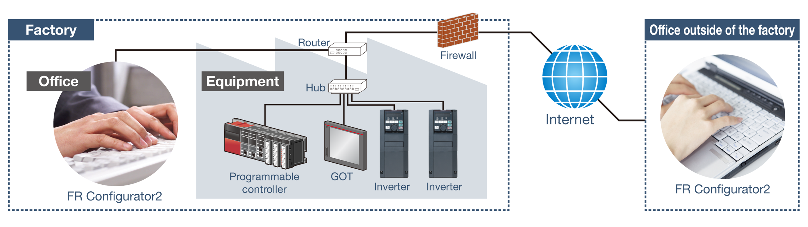
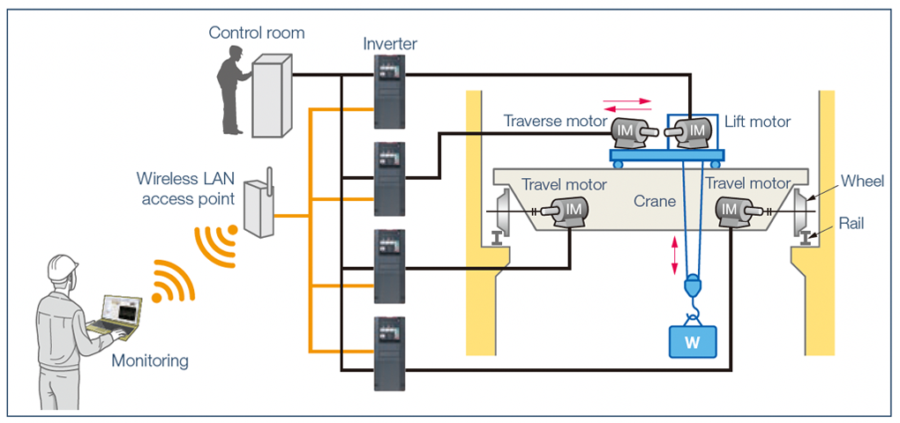

Inverters-FREQROL-A800 Plus Series -FREQROL-A800 Plus for CRANES- System support

System support
Compatibility with various open networks
Using a controller, the inverter can be controlled and monitored via various types of network.
Ethernet communication FR-A800-E-CRN
(1) CC-Link IE Field Network Basic supported
CC-Link IE Field Network Basic is supported, so the network can be created easily. The inverter's status can be monitored and the parameters can be set via Internet. (MODBUS/TCP is also supported.)

(2) Monitoring from a remote location
The FR-A800-E-CRN inverter can be connected to FR Configurator2 using a commercially-available industrial wireless LAN*1 access point.*2 Adjustments of inverter parameters, inverter monitoring (simultaneous monitoring of multiple axes possible) and inverter maintenance such as life diagnosis checks can be performed wirelessly.


- *1A wireless LAN suitable for the industrial use in severe environments or in environments requiring high reliability (redundancy).
- *2Under certain environments or installation conditions, Ethernet communication through wireless LAN is not as stable as communication through wired LAN. Before starting operation, always check the communication status. For applications requiring data transmission or update periodically or within a certain time period, a wired connection is recommended.
Other network communication
- CC-Link, SSCNETIII (/H), DeviceNet™, PROFIBUS-DPV0 are supported using a compatible communication option. Other Ethernet-based communication such as the CC-Link IE Field Network communication and the FL remote communication can be also supported.
- A function block (FB) programming for CC-Link communication is available for the MELSEC-Q/L series to create the inverter control sequence programs easily. (The FB library (collection of FB elements) can be downloaded from the Mitsubishi Electric FA Global Website.)
- The standard model with an RS-485 interface (Mitsubishi inverter protocol, MODBUS® RTU protocol) enables communication with other devices without using a communication option.